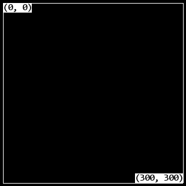
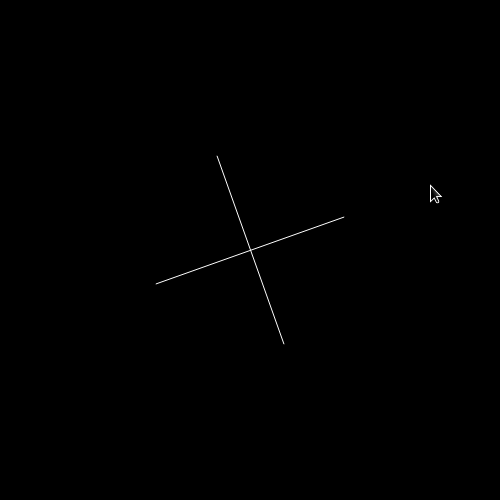
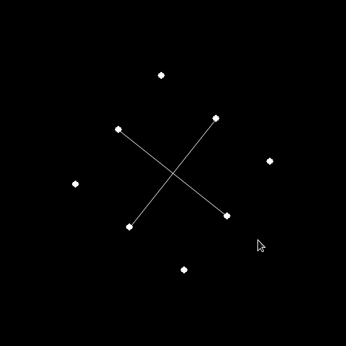
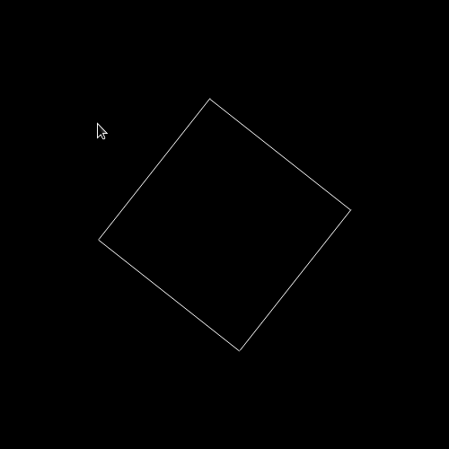

April 10, 2011 - Tagged as: python, pygame, tr.
Hazırlıktayken Pygame ile bir süre uğraşmıştım, hiçbir zaman oynanabilir bir oyun üretemedim ama birkaç deneme ile bu işlerin zorluğunu az da olsa tecrübe etmiştim.
Bugün şu sayfayı gördüm. Basit bir fizik motoru yapımından bahsediyor. Ordaki ilk örneği zaten yapmıştım(yöntemim biraz farklı ama olsun). Diğerleri de çok zor gözükmedi gözüme. Sonuçta, adım adım ilerleyerek zor gibi gözüken en son örnek bile halledilebilir.
Beklenmedik bir şekilde zor oldu :) . Öncelikle, genel olarak bu iş böyle mi yürüyor bilmiyorum ama, Pygame’de koordinat düzlemi biraz farklı. Aşağıdaki gibi.

Yani ekranın üst sol köşesi (0, 0) noktası, Y ekseni aşağı indikçe artıyor. Bilgiğimiz kartezyen düzlemin X eksenine göre döndürülmüş hali gibi yani. Bu tüm işleri zorlaştırıyor.
Topları falan eklemeden önce, 2. örnekteki siyah çerçeveyi yapmaya başladım. Aklımdaki fikir şuydu, ekranın ortasından(orijin) mouse’u gösteren bir birim vektör yardımıyla, ona paralel ve dik doğrular çizip kaydıracaktım. Tabii ekranın ortası, üstteki şekildeki düzene göre, (150, 150) oluyor.
Bu şu ana kadar alıştığımız düzenden çok farklı ve üzerinde hesap yapmak çok zor. Bunun yerine benim yapmaya çalıştığım, ekranın ortasını (0, 0) noktası alıp, işlemleri yapıp, daha sonra bir fonksiyondan geçirerek koordinatları ve vektörleri Pygame’deki düzleme uyarlamaktı. Şöyle bir fonksiyonla örneğin:
def _(v):
return v[^0]SCREENX/2, SCREENY/2-v[^1]Ekranın ortasını (0, 0) alarak hesapladığınız vektörü veya koordinat çiftini Pygame düzenine getiriyor. Bundan sonrası biraz daha kolay.
3 adımda tamamladım, ilk başta ekranın ortasından, mouse’u gösteren birim vektörle aynı ve zıt yönlerde doğrular çizdirdim. Daha sonra birim vektöre dik yönlerde. Fakat burda dikkat edilmesi gereken şey, Pygame mouse koordinatlarını verirken kendi düzenine göre veriyor, yani kullanabilmek için önce ekranın ortasının (0, 0) olduğu düzene dönüştürmemiz gerekiyor. Şu şekilde:
posx = ekran_genisligi / 2
posy = ekran_yuksekligi / 2
for event in pygame.event.get():
if event.type == pygame.MOUSEMOTION:
r = [event.pos[^0]posx, -event.pos[^1]posy]Bunu şöyle bir fonksiyondan geçirerek birim vektör haline getiriyorum:
def birim_vektor(n1, n2):
"""
n1, n2 noktalar ([x, y])
iki vektor nokta arasindaki birim vektoru verir.
baslangic n1, bitis n2 seklinde
"""
v = [n2[^0]n1[^0] n2[^1]n1[^1]
uzaklik = sqrt(v[^0]*2 + v[^1]*2)
v[^0]/= uzaklik
v[^1]/= uzaklik
return vDaha sonra bu vektöre dik ve zıt yönlü vektörler elde edip(koordinatlarını değiştirerek, - ile çarparak), ne uzunlukta istiyorsam koordinatlarını çarparak çizeceğim doğrunun diğer ucunu elde ediyorum(ilk ucu ekranın ortası zaten). Şöyle birşey:

Bundan sonra yapmam gereken, merkezden başlayarak, çizgilerin uç kısımlarına kalan olan kısmı vektör haline getirip, toplamam. Toplam vektörü bana oluşturmaya çalıştığım karenin köşelerini verecek:

Sonrası da zaten noktaları silip, bulundukları yere pygame.draw.aaline() ile çizgiler çizdirmek:

Kolay gibi gözükebilir, ama saatlerimi aldı. Koordinat düzlemi çok kafa karıştırıcı, ilk yazdığım fonksiyonu en başta yazıp, direkt normal, bildiğimiz kartezyen düzlemde çalışmaya başlamalıydım. İkinci olarak, vektörlerin bu kadar kullanışlı olacağını hiç bilmezdim, daha önce de hiç kullanmamıştım zaten. Onu öğrendim. Kapsamlı bir vektör sınıfı yazılabilir(vektörel/skaler çarpım, toplama, çıkarma, vb. işlemler için). Çarpışma için de sürekli kullanılacaklar zaten.
Başta verdiğim kaynaktaki tüm örnekleri yapmaya çalışacağım. Olduğu kadarını github’a koyacağım muhtemelen. Şu anda kod kötü durumda, düzenledikten sonra bu halini de koyabilirim.
Bu arada şunu farkettim, Pygame çok kolay bir kütüphane, öğrenme diye birşey yok, dökümantasyonu açıyorsunuz, ne gerekirsa 10 saniyede bakıp çiziyorsunuz. Programlamaya başlangıç veya başka testler için eğlenceli işler yapılabilir. Geçen seneden kalma Pygame kod arşivim var, font işlemler, çizgiler, resimler vs, ne işim olsa ordan bakarak yazıyorum. Mesela aklıma geldi, networking ile uğraşıyorum, Pygame yardımıyla basit bir pong yapılabilir. Pygame kısmı zaten 100 satırı bile geçmeyecektir.